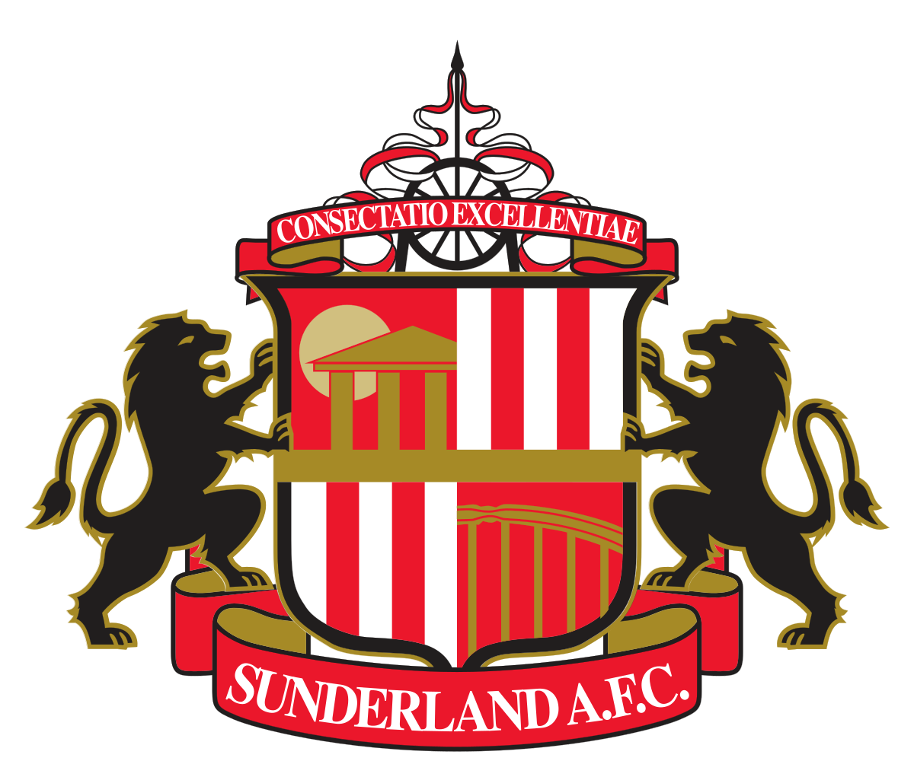

Futbol
En esta sección podrás observar resultados de cada jornada para cada una de las ligas.
Además, mostramos la tabla de posiciones una vez que la jornada finalice.
Haz click en la liga que prefieras.


Premier League
Selecciona la jornada para observar resultados y posiciones de los equipos.
Al finalizar la semana, se mostrará la tabla de posiciones, donde se indica si el equipo subió posiciones respecto a la jornada anterior.
Jornada 32
 |
West Ham | - | Wolves |  |
 |
Arsenal | - | Bournemouth |  |
 |
Brentford | - | Everton |  |
 |
Burnley | - | Burnley |  |
 |
Liverpool | - | Fulham |  |
 |
Crystal | - | Newcastle |  |
 |
Sunderland | - | Tottenham |  |
 |
Nottingham | - | Aston Villa |  |
 |
Chelsea | - | Man. City |  |
 |
Man. United | - | Leeds |  |